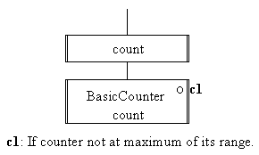

The stopping counter class differs significantly only in the implementation of the count() and unCount() actions which are implemented as a simple selection, as follows.

0021 public void count() {
0022 if ( ! this.isAtMaximum()) {
0023 super.count();
0024 } // End if.
0025 } // End count.
The demonstration harness will also require
amendments, producing output as follows.
Stopping Counter demonstration The counter has been created with a range of 10 to 12 and an initial value of 10. Demonstrating numberCountedIs() The value should be 10 ... 10. Counting two occurrences with count() Its value should now be 12 ... 12. Counting another occurrence with count() Its value should still be 12 ... 12.